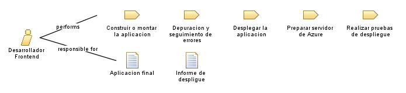

| Role: Desarrollador Frontend |
 |
|
Relationships
 |
||
| Primary Performs | ||
|---|---|---|
| Modifies |
|
|
Main Description
| Un desarrollador front-end es responsable de crear y mantener la parte visual y interactiva de una aplicación web o móvil. Se enfoca en la implementación de la interfaz de usuario, el diseño gráfico, la interactividad y la experiencia del usuario. Utiliza principalmente lenguajes de programación como HTML, CSS y JavaScript, así como frameworks y bibliotecas populares como React, Angular o Vue.js. |
Staffing
| Skills | Dominio de lenguajes de programación web Frameworks y librerías front-end Diseño responsive Conocimientos de diseño visual Conocimientos de UX/UI Conocimientos de optimización web Herramientas de desarrollo y depuración Adaptabilidad y aprendizaje continuo: |
|---|